Borup
Höhe: 170 cm
Größte Breite: 80 cm
Größte Dicke: 30 cm
Runenhöhe: 11 - 16 cm
Runeninschrift :
Asi errichtete diesen Stein nach Thorgot, seinem Vater, Boves Sohn, dem besten (?) "Thegn"

49 - Borup - Letztes Update 10.09.2025
Listennummer : DR kein / DK MJy 57
|
Navidaten: 56.50483 9.98530 oder: Borup Byvej
83, 8920 Randers NV |
Transliteration: asi : risþi : stin : þansi : iftiR : þurkut : faþ|ur : sin : bufa : sun : bistat : þikn
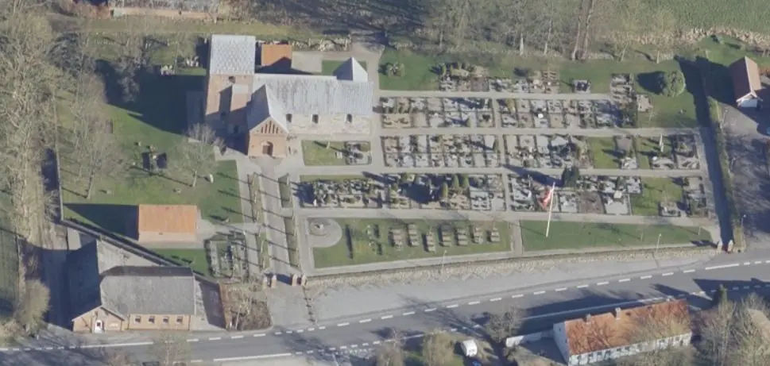
Das ist ein Luftfoto vom 02.04.2023 von Skråfoto - Lizenz: CC BY 4.0 - das die Kirche von Borup zeigt. Skråfoto ist eine Webanwendung, die von Klimadatastyrelsen weltweit kostenlos bereitgestellt wird. Die Aufnahmen werden seit 2017 alle zwei Jahre erneuert und neben einer Senkrechtaufnahme wird ein Schrägbild aus jeder Himmelsrichtung angeboten, das man über eine Adresssuche aufrufen kann.
Bei der Neugestaltung des Steinpflasters entlang der Nordseite der Borup-Kirche, nördlich von Randers, entdeckte ein Mitglied des Gemeinderates, Kai Toft Nielsen, am 09.05.1995 eine Runeninschrift auf einem großen Stein, der unter dem zugemauerten Nordportal herausragte. Am nächsten Morgen unterrichtete er telefonisch das Kulturhistorische Museum in Randers. Daraufhin wurde der Stein Tage drauf vom Museumsinspektor des Nationalmuseums in Kopenhagen, von Morten Aaman Sørensen mit Kollegen freigelegt. Auch Marie Stoklund (*11.08.1934 - 03.09.2021, dänische Runologin am dänischen Nationalmuseum) war vor Ort und inspizierte die Inschrift noch in situ. Später wurde der Stein herausgenommen und zunächst in das Kulturhistorische Museum in Randers verbracht.
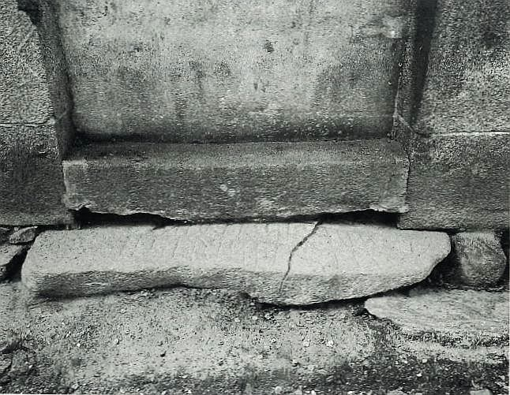
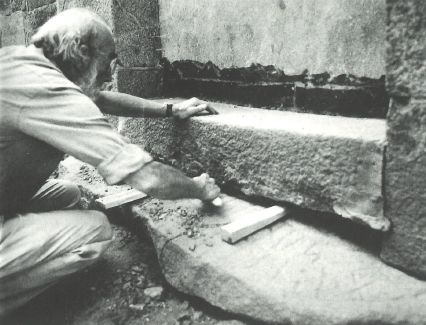
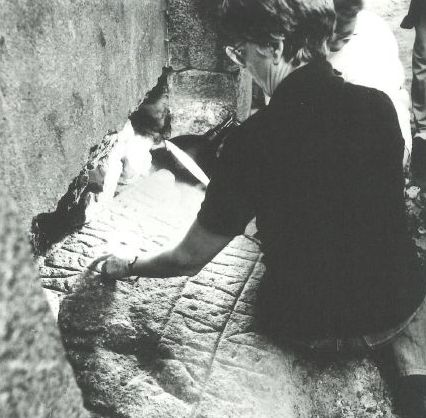
Bildquelle: Michael Lerche Nielsen - 1996 - S. 22 - Artikel vom Autor auf Anfrage als Kopie zur Nutzung erhalten / Ernst Stidsing - Borupstenen - S. 47 und 48 - siehe unten - Lizenz jeweils: CC-BY-SA
Der Stein war als Türschwelle bei der Erbauung der romanischen Kirche benutzt worden und brach später aufgrund der Druckes des Tür-Säulenportals, das an beiden Steinenden auflag, entzwei. Es erhebt sich die Frage, ob der Stein an dieser Stelle aufgrund seiner Form eingesetzt wurde, oder ob die Christen bewusst das Heidentum, hier in Form des Runensteines, mit Füßen treten wollten. Möglich wäre auch die Interpretation, dass dieser Stein bewusst so dicht bei der Kirche abgelegt wurde, um möglicherweise die vergangenen Generationen zu erretten.
Aufgrund einer Absenkung des Terrains ist später ein sekundärer, ca. 30 cm hoher Stein als Türschwelle darauf gelegt worden, anscheinend gleichzeitig mit dem Zumauern der Tür.
Die Inschrift ist gut erhalten, abgesehen vom Querbruch. Der Stein weist jetzt eine Höhe über dem Erdboden von 140 cm auf, die Inschrifthöhe beträgt ungefähr 130 cm, die -breite ca. 73 cm. Die Runen sind in zwei Parallelen verteilt, in eingerahmten Bändern, die etwa der Steinkontur folgen. Als Trennzeichen sind zwei runde oder längliche Vertiefungen angewandt worden. Die Inschrift beginnt rechts unten im äußeren Band, führt entlang der Steinkontur und endet links unten zunächst mitten in einem Wort (Vater). Sie wird dann im inneren Band von links nach rechts fortgeführt.
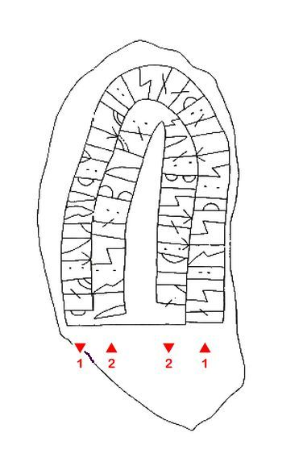
Zeichnung: Jørgen Kraglund in SKALK für Michael Lerche Nielsen - siehe unten - Lizenz: CC-BY-SADie Inschriftanordnung bei den Runenbändern mit einer gemeinsamen unteren Basislinie kennt man auch von anderen Runensteinen in diesem Gebiet (z.B. Langå 3, Grensten, Øster Bjerregrav_2 und Vester Tørslev).
Die Sequenz bistat ist vermutlich ein Schreibfehler für bistan. Es ist relativ selten, dass drei Generationen auf den dänischen Runensteinen genannt werden. Es kommt aber vor auf den Runensteinen von Grensten/Jütland und Asmild Alle drei erwähnten Namen sind von anderen Runensteinen her bekannt.
Aufgrund des Inschriftenaufbaus und der verwendeten Runenform wurde die Inschrift zw. 970 und 1020 geritzt. Aus dieser Periode stammen die meisten Steine in der Umgebung und der Borup-Stein fügt sich sehr schön in dieses Muster ein, unter anderem weil er für einen "Thegn" errichtet wurde.
Heute steht der Stein steht im Waffenhaus der Kirche von Borup, Samstag und Sonntag von 09.00 17.00 Uhr geöffnet. An den anderen Wochentagen ist der Küster von 12.00 12.30 Uhr bei der Kirche zu erreichen. Im Vorfeld kann man zu der Zeit auch telefonisch eine Absprache mit dem Küster treffen (Tel. 86 43 50 57) - Bitte alles ohne Gewähr!
Auf der entsprechenden Seite der "Dänische Runendatenbank" führt Michael Lerche Nielsen (Professor - Department of Nordic Studies and Linguistics in Kopenhagen) folgenden Kommentar aus (übersetzt):
"Es ist denkbar, dass der in der Inschrift erwähnte Bove der Gründer des Dorfes Borup war. Die lokale Dialektaussprache von Borup weist auf einen zweisilbigen Vorläufer hin, der als altes dänisches Bóva-þorp rekonstruiert werden kann. Bei Ortsnamen für -rup, -strup, -drup usw. (Altdänisch -thorp) wird allgemein angenommen, dass sie in der späten Wikingerzeit und im Mittelalter gegründet wurden. Das Vorhandensein einer Wassermühle und die Siedlungsgeschichte der Gemeinde scheinen die Theorie zu unterstützen, dass Borup ein Häuptlingssitz war."
Im Rahmen meiner 2022er Jütland Wikinger Tour war ich am Mittwoch, 15.06.2022, gegen 10.45 Uhr, vor Ort und traf auf eine geöffnete Kirche. Im Waffenhaus konnte ich vom Runenstein diese Fotos machen.
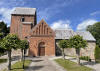 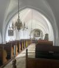 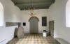 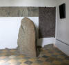 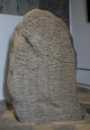 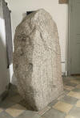 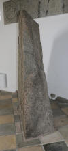 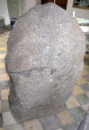 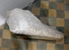


Bei meinem Besuch am Donnerstag, 25.08.2016, war die Kirche leider verschlossen. An der Kirchen-Infotafel fand sich aber den Hinweis auf einen Schlüsselträger im Borup Kirkevej (direkt um die Ecke). Den Herrn traf ich bei Malerarbeiten an seinem Haus an und bekam nach einem kurzen Plausch prompt den Kirchenschlüssel vertrauensvoll ausgehändigt. So war die Anfahrt dann zum Glück doch nicht umsonst!
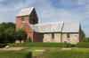 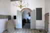 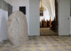 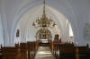 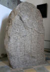 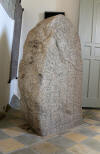 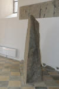 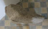 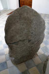


Zuvor war ich erstmals am Samstag, 26. Mai 2001, vor Ort gewesen.
Im Vorfeld zu dem 2016 erschienenen Buch von Lisbeth M. Imer (*1973, Runologin am Nationalmuseum Kopenhagen) "Danmarks Runesten - en fortælling" reiste sie mit dem Fotografen Roberto Fortuna zur Bestandsaufnahme durch die Lande. Dieser hat die Runensteine mit Schräglicht aufgenommen und darüber wirklich herausragende Fotos erzielt. Diese Fotografie stammt 08.03.2012.
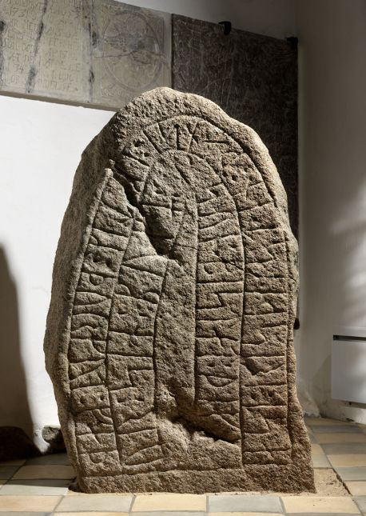
Der digitalen Sammlung des Nationalmuseums Kopenhagen entnommen - Lizenz: CC-BY-SA
Den Eintrag zu diesem Runenstein aus der dänischen Runen Datenbank im Internet kann man hier abrufen.
Die Informationen in "Fund og Fortidsminder" zu dem Runenstein finden sich hier. Darin ist inzwischen dieser Zustandsbericht des Steinrestaurators Leif Vognsen aus dem Jahr 2018 eingebettet.
Über diesen Link finden sich zu dem Runenstein Informationen des Forschungsprojektes "Runes" der Akademie der Wissenschaften zu Göttingen.
Über die Webseite von www.biopix-foto.de kann man ein Foto dieses Runensteins mit rot nachgezeichneten Runen anschauen, was natürlich eine deutlich verbesserte Ansicht darstellt, auch wenn die Runen im Vergleich zu anderen Runensteinen eigentlich gut lesbar sind.
Literaturhinweise:
Ernst Stidsing - Borupstenen - En nyfunden runesten - Kulturhistorisk Museum Randers Årbog 1995 - S. 46-50
Michael Lerche Nielsen - Ase, Thorgot og Bove - SKALK 1996 - Nr. 3 - S. 12-14
Marie Stoklund - Nytt om Runer 11, 1996, In: Nyfund fra Danmark i 1995 - S. 6-8
Ernst Stidsing - Borup Runesten - Arkaeologiske udgravninger i Danmark 1995 - Nr. 316 - S. 86 in der pdf-Datei
Eine schöne Fotostrecke - 22 Stück - der Borup Kirche - innen und außen - aus dem Jahr 2017 von Claes Hvidbak kann man sich hier anschauen. Aber leider kein einziges Bild vom Runenstein dabei!